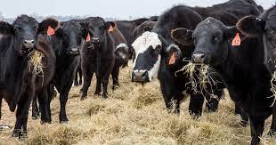

Growing Up
I grew up in a small town called stanthorpe it is located about 200km south-west of brisbane, my family owned a small cattle farm. The granite belt area is known for its wine their are 52 wineries located in the district. Once I completed highschool I started a chefing apprenticeship and then moved away shortly after commencing it.
Employment

From the age of 13 I have been working in hospitality, I have been a chef for a number of year but underwent I coding bootcamp by Coderacademy Australia and have emergered as a Full stack Web Develope
Life Goals
One life goal of mine is to travel to the mount everest base camp in nepal this consists of a 10 day hike approximately 110kms of inclined walking, This is something that I would really like to achieve in my lifetime.
Hobbies

- 4x4 Driving
- Fishing
- Camping
- AFL
- Gaming
- Scuba Diving